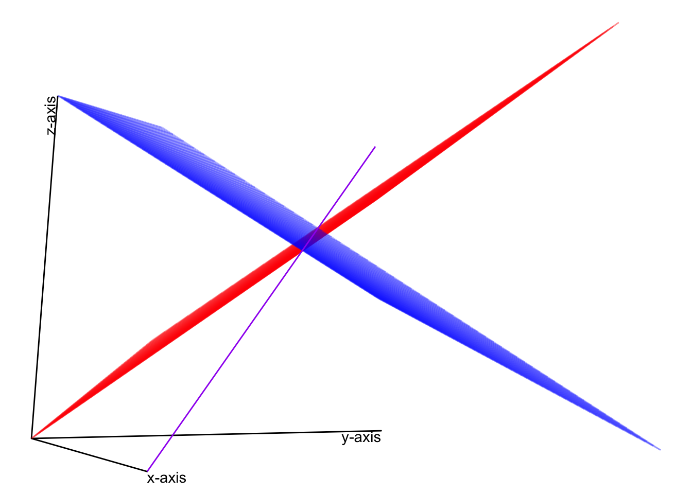

Chapter 2 Linear Systems of Equations
library(tidyverse)
# For 3-d plotting
# if devtools package not installed, install the package
if (!require(devtools)) {
install.packages("devtools")
}
# if gg3D package not installed, install the package
if (!require(gg3D)) {
devtools::install_github("AckerDWM/gg3D")
library(gg3D)
}## Warning in fun(libname, pkgname): no display name and no $DISPLAY environment
## variable# if dasc2594 package not installed, install the package
if (!require(dasc2594)) {
devtools::install_github("jtipton25/dasc2594")
library(dasc2594)
}2.1 Linear Systems of equations
2.1.1 Linear equations
Definition 2.1 (Linear Equations) Let \(x_1, x_2, \ldots, x_n\) be variables with coefficients \(a_1, a_2, \ldots, a_n\), and \(b\) are fixed and known numbers. Then, we say
\[ \begin{align} \tag{2.1} a_1 x_1 + a_2 x_2 + \cdots + a_n x_n & = b \end{align} \]
is a linear equation.Example 2.1 The equation for a line with slope \(m\) and \(y\)-intercept \(b\) is
\[ \begin{align*} y & = m x + b, \end{align*} \]
is a linear equation because it can be re-written as
\[ \begin{align*} y - m x & = b, \end{align*} \]
where \(a_1 = 1\), \(a_2 = m\), \(x_1 = y\) and \(x_2 = x\).Example 2.2 The equations
\[ \begin{align*} \sqrt{19} x_1 & = (4 + \sqrt{2}) x_2 - x_3 - 9 & \mbox{ and } && -4 x_1 + 5 x_2 - 11 & = x_3 \end{align*} \]
are both linear equations because they can be written as
\[ \begin{align*} \sqrt{19} x_1 - (4 + \sqrt{2}) x_2 + x_3 & = - 9 & \mbox{ and } && -4 x_1 + 5 x_2 - x_3 & = 11, \end{align*} \]
respectively.Example 2.3 The equations
\[ \begin{align*} x_1 & = x_2^2 + 3 & \mbox{ and } && x_1 + x_2 - x_1 x_2 & = 16 \end{align*} \]
are not linear equations because they do not meet the form of (2.1) (The first equation above has a quadratic power of \(x_2\) and the second equation has a product of \(x_1\) and \(x_2\)).2.1.2 Systems of linear equations
Example 2.4 The equations
\[ \begin{alignat*}{4} x_1 & {}+{} & 4 x_2 & {}-{} & x_3 & {}={} & 11 \\ 4 x_1 & {}+{} & 5 x_2 & {}+{} & 2 x_3 & {}={} & 9. \end{alignat*} \]
are a system of equations. Note that in the second equation, the coefficient for \(x_3\) is 0, meaning we could re-write the above example as
\[ \begin{alignat*}{4} x_1 & {}+{} & 4 x_2 & {}-{} & x_3 & {}={} & 11 \\ 4 x_1 & {}+{} & 5 x_2 & {}+{} & 0 x_3 & {}={} & 9. \end{alignat*} \]For the following, are these linear equations?
Solution. This is a linear equation because the equation can be written as \(a_1 x_1 + a_2 x_2 = b\) where \(a_1 = 1\), \(a_2 = 3\) and \(b = 5\)
Solution. This is a linear equation because the equation can be written as \(a_1 x_1 + a_2 x_2 + a_3 x_3= b\) where \(a_1 = 5\), \(a_2 = 7\), \(a_3 = 8\) and \(b = 11.2\). The variables \(x_1 = x\), \(x_2 = y\), and \(x_3 = z\).
Solution. This is a linear equation because the equation can be written as \(a_1 x_1 + a_2 x_2 = b\) where \(a_1 = \frac{1}{4}\), \(a_2 = \sqrt{2}\), and \(b = 2^6\). The variables \(x_1 = y\), \(x_2 = z\) enter the equation linearly.
Solution. This is not a linear equation because the equation cannot be written as \(a_1 x_1 + a_2 x_2 = b\) because \(x_1 = x\) and \(x_2 = y\) so that the equation is written as \(a_1 x_1 + a_2 x_2^2 = b\) where \(a_1 = 1\), \(a_2 = 4\), and \(b = 9\). The variable \(x_2 = y\) enters the equation in a non-linear (quadratic) manner.
2.1.3 Solutions of linear systems
A fundamental question when presented with a linear system of equations is whether the system has a solution.
Example 2.9 Is \(\mathbf{x} = \begin{pmatrix} 5 \\ 3 \\ 6 = \end{pmatrix}\) a solution to the system of equations \[\begin{alignat*}{3} x_1 & {}+{} & 4 x_2 & {}-{} & x_3 & {}={} & 11 \\ 4 x_1 & {}+{} & 5 x_2 & {}+{} & 0 x_3 & {}={} & 9. \end{alignat*}\]}
Solution. First, we plug in the values for \(x_1 = 5\), \(x_2 = 3\) and \(x_3 = 6\). In the first equation, we get \[\begin{alignat*}{3} 5 & {}+{} & 4 \times 3 & {}-{} & 6 & {}={} & 11 \\ \end{alignat*}\]} which is true because \(11 = 11\). Now we consider the second equation
\[\begin{alignat*}{3} 4 \times 5 & {}+{} & 5 \times 3 & {}+{} & 0 \times 6 & {}={} & 9. \end{alignat*}\]} which is false because \(35 \neq = 9\). Thus, \(\mathbf{x} = \begin{pmatrix} 5 \\ 3 \\ 6 = \end{pmatrix}\) is not a solution to the system of equations in the given example.
Example 2.10 Consider the system of equations
\[ \begin{alignat*}{3} x & {}+{} & 4 y & {}={} & 8 \\ 4 x & {}+{} & 5 y & {}={} & 7. \end{alignat*} \]
Solution. To find if a solution to this equation exists, we can do some algebra and take 4 times the top equation and then subtract the bottom equation, replacing the bottom equation with this new sum like
\[ \begin{alignat*}{3} x & {}+{} & 4 y & {}={} & 8 \\ 4 x - 4 * (x) & {}+{} & 5 y - 4 * (4y) & {}={} & 7 - 4 * (8), \end{alignat*} \] where the part of the equations in (\(\cdot\)) is the top equation. This system of equations now simplifies to
\[ \begin{alignat*}{3} x & {}+{} & 4 y & {}={} & 8 \\ 0 & {}+{} & - 11y & {}={} & -25, \end{alignat*} \]
which gives \(y = \frac{25}{11}\). Plugging this value into the top equation gives
\[ \begin{alignat*}{3} x & {}+{} & 4 \frac{25}{11} & {}={} & 8 \\ 0 & {}+{} & y & {}={} & \frac{25}{11}, \end{alignat*} \]
where we can solve \(x = 8 - \frac{100}{11} = -\frac{12}{11}\) giving the solution of the form
\[ \begin{alignat*}{3} x & {}+{} & 0 & {}={} & -\frac{12}{11} \\ 0 & {}+{} & y & {}={} & \frac{25}{11}, \end{alignat*} \]
In this case, the system of equation has the solution \(x = -\frac{12}{11}\) and \(y = \frac{25}{11}\). While finding the solution can be done algebraically, what does this mean visually (geometrically)? The original equations were
\[ \begin{alignat*}{3} x & {}+{} & 4 y & {}={} & 8 \\ 4 x & {}+{} & 5 y & {}={} & 7, \end{alignat*} \]
which, writing \(y\) as a function of \(x\) define two lines:
- \(y = -\frac{x}{4} + 2\)
- \(y = -\frac{4x}{5} + \frac{7}{5}\)
Let’s plot these equations in R and see what they look like
# define some grid points to evaluate the line
x <- seq(-2, 2, length = 1000)
dat <- data.frame(
x = c(x, x),
y = c(-x / 4 + 2, - 4 / 5 * x + 7/5),
equation = factor(rep(c(1, 2), each = 1000))
)
glimpse(dat)## Rows: 2,000
## Columns: 3
## $ x <dbl> -2.000000, -1.995996, -1.991992, -1.987988, -1.983984, -1.979…
## $ y <dbl> 2.500000, 2.498999, 2.497998, 2.496997, 2.495996, 2.494995, 2…
## $ equation <fct> 1, 1, 1, 1, 1, 1, 1, 1, 1, 1, 1, 1, 1, 1, 1, 1, 1, 1, 1, 1, 1…dat %>%
ggplot(aes(x = x, y = y, color = equation, group = equation)) +
geom_line() +
scale_color_viridis_d(end = 0.8) +
# solution x = -12/11, y = 25/11
geom_point(aes(x = -12/11, y = 25/11), color = "red", size = 2) +
ggtitle("Linear system of equations")Figure 2.1: Linear system of equations with one solution
From this plot, it is clear that the solution to the system of equations is the location where the two lines intersect!
2.1.4 Types of solutions
Typically, there are 3 cases for the solutions to a system of linear equations
- There are no solutions
- There is one solution (Figure 2.1)
- There are infinitely many solutions
2.1.4.1 There are no solutions:
Consider the system of linear equations
\[ \begin{alignat*}{3} x & {}+{} & 4 y & {}={} & 8 \\ 4 x & {}+{} & 16 y & {}={} & 18. \end{alignat*} \]
# define some grid points to evaluate the line
x <- seq(-2, 2, length = 1000)
dat <- data.frame(
x = c(x, x),
y = c(-x / 4 + 8 / 4, - x / 4 + 18 / 4),
equation = factor(rep(c(1, 2), each = 1000))
)
glimpse(dat)## Rows: 2,000
## Columns: 3
## $ x <dbl> -2.000000, -1.995996, -1.991992, -1.987988, -1.983984, -1.979…
## $ y <dbl> 2.500000, 2.498999, 2.497998, 2.496997, 2.495996, 2.494995, 2…
## $ equation <fct> 1, 1, 1, 1, 1, 1, 1, 1, 1, 1, 1, 1, 1, 1, 1, 1, 1, 1, 1, 1, 1…dat %>%
ggplot(aes(x = x, y = y, color = equation, group = equation)) +
geom_line() +
scale_color_viridis_d(end = 0.8) +
# solution x = -12/11, y = 25/11
ggtitle("Linear system of equations")Figure 2.2: Linear system of equations with no solution
In this case, the linear equations are parallel lines and will never intersect so therefore there is no solution.
Solution. To find if a solution to this equation exists, we can do some algebra and take 4 times the top equation and then subtract the bottom equation, replacing the bottom equation with this new sum like
\[
\begin{alignat*}{3}
x & {}+{} & 4 y & {}={} & 8 \\
4 x - 4(x) & {}+{} & 16 y - 4\times (4 y) & {}={} & 18 - 4 \times (8).
\end{alignat*}
\]
where the part of the equations in () is the top equation. This system of equations now simplifies to
\[ \begin{alignat*}{3} x & {}+{} & 4 y & {}={} & 8 \\ 0 x & {}+{} & 0 y & {}={} & -14, \end{alignat*} \]
which gives \(0 = -14\). From this, we see that we have reached a contradiction so there is not a solutoin to the system of equations.
2.1.4.2 There is one solution:
We have seen this example in Figure 2.1.
2.1.4.3 There are infinitely many solutions:
Consider the system of linear equations
\[ \begin{alignat*}{3} x & {}+{} & 4 y & {}={} & 8 \\ 4 x & {}+{} & 16 y & {}={} & 32. \end{alignat*} \]
# define some grid points to evaluate the line
x <- seq(-2, 2, length = 1000)
dat <- data.frame(
x = c(x, x),
y = c(-x / 4 + 8 / 4, - 4 * x / 16 + 32 / 16),
equation = factor(rep(c(1, 2), each = 1000))
)
glimpse(dat)## Rows: 2,000
## Columns: 3
## $ x <dbl> -2.000000, -1.995996, -1.991992, -1.987988, -1.983984, -1.979…
## $ y <dbl> 2.500000, 2.498999, 2.497998, 2.496997, 2.495996, 2.494995, 2…
## $ equation <fct> 1, 1, 1, 1, 1, 1, 1, 1, 1, 1, 1, 1, 1, 1, 1, 1, 1, 1, 1, 1, 1…dat %>%
ggplot(aes(x = x, y = y, color = equation, group = equation)) +
geom_line() +
scale_color_viridis_d(end = 0.8) +
# solution x = -12/11, y = 25/11
ggtitle("Linear system of equations")Figure 2.3: Linear system of equations with no solution
In this case, the linear equations are perfectly overlapping lines and always intersect so therefore there are infinitely many solutions (all points on the line).
For example, the system of equations \[ \begin{alignat*}{4} x_1 & {}+{} & 4 x_2 & {}-{} & x_3 & {}={} & 11 \\ 4 x_1 & {}+{} & 5 x_2 & {}+{} & 2 x_3 & {}={} & 9 \end{alignat*} \]
and the system of equations \[ \begin{alignat*}{4} 2x_1 & {}+{} & 8 x_2 & {}-{} & 2 x_3 & {}={} & 22 \\ 8 x_1 & {}+{} & 10 x_2 & {}+{} & 4 x_3 & {}={} & 18. \end{alignat*} \]
have the same solution set (the second set of equations is just 2 times the first set of equations).
Example 2.11 For the following system of equations, determine if a solution(s) exist and if so, solve for the solution \[ \begin{alignat*}{3} 4 x_1 & {}+{} & 5 x_2 & {}={} & 8 \\ 9 x_1 & {}-{} & 3 x_2 & {}={} & 4. \end{alignat*} \]
Solution. Multiply the first equation by \(\frac{1}{4}\) and the second equation by \(\frac{1}{9}\) to get
\[ \begin{alignat*}{3} x_1 & {}+{} & \frac{5}{4} x_2 & {}={} & 2 \\ x_1 & {}-{} & \frac{1}{3}x_2 & {}={} & \frac{4}{9}. \end{alignat*} \]
Subtract the first equation from the second equation
\[ \begin{alignat*}{3} x_1 & {}+{} & \frac{5}{4} x_2 & {}={} & 2 \\ 0 & {}-{} & (-\frac{1}{3} - \frac{5}{4}) x_2 & {}={} & \frac{4}{9} - 2, \end{alignat*} \] which reduces to \[ \begin{alignat*}{3} x_1 & {}+{} & \frac{5}{4} x_2 & {}={} & 2 \\ 0 & {}-{} & -\frac{19}{12} x_2 & {}={} & -\frac{14}{9}, \end{alignat*} \] so that, dividing both sides of the second equation by \(-\frac{19}{12}\) gives \(x_2 = \frac{56}{57}\). Plugging this value of \(x_2\) into the first equation gives
\[ \begin{alignat*}{3} x_1 & {}+{} & \frac{5}{4} \left(\frac{56}{57}\right) & {}={} & 2 \\ 0 & {}-{} & x_2 & {}={} & \frac{56}{57} \end{alignat*} \]
and subtracting \(\frac{5}{4} \frac{56}{57}\) from both sides of the first equation gives \(x_1 = \frac{44}{57}\). You can check these solutions by verifying that the following two equations hold
\[
\begin{alignat*}{3}
4 \left(\frac{44}{57}\right) & {}+{} & 5 \left(\frac{56}{57}\right) & {}={} & 8 \\
9 \left(\frac{44}{57}\right) & {}-{} & 3 \left(\frac{56}{57}\right)& {}={} & 4
\end{alignat*}
\]
which can be done in R using
## [1] TRUE## [1] TRUEExample 2.12 For the following system of equations, determine if a solution(s) exist and if so, solve for the solution \[ \begin{alignat*}{4} 7 x_1 & {}+{} & 3 x_2 & {}+{} & 4 x_3 & {}={} & 5\\ 4 x_1 & {}-{} & 5 x_2 && & {}={} & -2 \end{alignat*} \]
Solution. Multiply the first equation by \(\frac{1}{7}\) and the second equation by \(\frac{1}{4}\) to get
\[ \begin{alignat*}{4} x_1 & {}+{} & \frac{3}{7} x_2 & {}+{} & \frac{4}{7} x_3 & {}={} & \frac{5}{7} \\ x_1 & {}-{} & \frac{5}{4} x_2 & {}+{} & 0 x_3 & {}={} & \frac{-1}{2} \end{alignat*} \]
Subtract the first equation from the second equation
\[ \begin{alignat*}{3} x_1 & {}+{} & \frac{3}{7} x_2 & {}+{} & \frac{4}{7} x_3 & {}={} & \frac{5}{7} \\ 0 x_1 & {}+{} & (-\frac{5}{4} - \frac{3}{7}) x_2 &{}+{}& -\frac{4}{7} x_3 & {}={} & - \frac{1}{2} - \frac{5}{7} \end{alignat*} \] which reduces to \[ \begin{alignat*}{3} x_1 & {}+{} & \frac{3}{7} x_2 & {}+{} & \frac{4}{7} x_3 & {}={} & \frac{5}{7} \\ 0 & {}-{} & -\frac{47}{28} x_2 &{}-{}& \frac{4}{7} x_3 & {}={} & -\frac{17}{14}. \end{alignat*} \] Next, divide the second equation by \(\frac{-47}{28}\) gives
\[ \begin{alignat*}{3} x_1 & {}+{} & \frac{3}{7} x_2 & {}+{} & \frac{4}{7} x_3 & {}={} & \frac{5}{7} \\ 0 & {}+{} & x_2 &{}+{}& \frac{16}{47} x_3 & {}={} & \frac{34}{47}. \end{alignat*} \]
Then, take the first equation and subtract \(-\frac{3}{7}\) times the second row to get
\[ \begin{alignat*}{3} x_1 & {}+{} & 0 x_2 & {}+{} & \frac{20}{47} x_3 & {}={} & \frac{19}{47} \\ 0 & {}+{} & x_2 &{}+{}& \frac{16}{47} x_3 & {}={} & \frac{34}{47}. \end{alignat*} \]
Which gives the solution \(x_1 + \frac{20}{47} x_3 = \frac{19}{47}\), \(x_2 + \frac{16}{47} x_3 = \frac{34}{47}\), and \(x_3 = x_3\) is a free variable.
The solution can be checked in R using
# this is a free variable, you can assign it any value
x3 <- 3
x1 <- 19/47 - 20/47 * x3
x2 <- 34/47 - 16/47 * x3
# check the first equation
all.equal(7 * x1 + 3 * x2 + 4 * x3, 5)## [1] TRUE## [1] TRUEExample 2.13 For the following system of equations, determine if a solution(s) exist and if so, solve for the solution \[ \begin{alignat*}{3} 4 x_1 & {}-{} & 2 x_2 & {}={} & 8\\ 2 x_1 & {}+{} & x_2 & {}={} & 7 \\ -3 x_1 & {}+{} & 6 x_2 &{}={} & 11 \end{alignat*} \]
Solution. Multiply the first equation by \(\frac{1}{4}\), the second equation by \(\frac{1}{2}\), and the third equation by \(-\frac{1}{3}\) to get
\[ \begin{alignat*}{3} x_1 & {}-{} & \frac{1}{2} x_2 & {}={} & 2\\ x_1 & {}+{} & \frac{1}{2} x_2 & {}={} & \frac{7}{2} \\ x_1 & {}-{} & 2 x_2 &{}={} & -\frac{11}{3} \end{alignat*} \]
Subtract the first equation from the second equation and also subtract the first equation from the third equation. Thus, we get
\[ \begin{alignat*}{3} x_1 & {}-{} & \frac{1}{2} x_2 & {}={} & 2\\ 0 x_1 & {}+{} & x_2 & {}={} & \frac{3}{2} \\ 0 x_1 & {}-{} & \frac{3}{2} x_2 &{}={} & -\frac{17}{3}. \end{alignat*} \] Then, multiply the third equation by \(-\frac{2}{3}\) to get \[ \begin{alignat*}{3} x_1 & {}-{} & \frac{1}{2} x_2 & {}={} & 2\\ 0 x_1 & {}+{} & x_2 & {}={} & 3 \\ 0 x_1 & {}+{} & x_2 &{}={} & - \frac{34}{9}. \end{alignat*} \] Notice that the second equation gives \(x_2 = 3\) while the third equation gives \(x_2 = -\frac{34}{9}\). This is a contradiction (\(3 \neq -\frac{34}{9})\) which implies that the system of equations does not have a solution. Thus we say the system of equations is inconsistent.
2.1.5 Elementary row and column operations on matrices
The elementary row (column) operations include
- swaps: swapping two rows (columns),
- sums: replacing a row (column) by the sum itself and a multiple of another row (column)
- scalar multiplication: replacing a row (column) by a scalar multiple times itself
Note that these operations are exactly what we used to solve the equation using algebra above (except for swapping rows).
Example 2.14 For the elementary row operations listed above, we demonstrate these using the matrix
\[ \begin{align*} \begin{pmatrix} 1 & 4 & 7 \\ 2 & 5 & 8 \\ 3 & 6 & 9 \end{pmatrix} \end{align*} \]
The matrix \(\mathbf{A}\) can be represented in R using
Swap the first and second rows.
Add -3 times the first row to the third row.
Multiply the second row by \(\frac{1}{2}\).
Solution. Here we present examples of the elementary row operations
- Swap the first and second rows.
The matrix with the first and second rows swapped is
\[ \begin{align*} \begin{pmatrix} 2 & 5 & 8 \\ 1 & 4 & 7 \end{pmatrix} \end{align*} \]
Notice that the first and second rows have now switched places. This can be done in R in a variety of ways. First, we extract the rows and place them “by hand” in R.
A <- matrix(c(1:9), 3, 3, byrow = FALSE)
# extract the rows
row1 <- A[1, ]
row2 <- A[2, ]
# swap the rows
A[1, ] <- row2
A[2, ] <- row1
A## [,1] [,2] [,3]
## [1,] 2 5 8
## [2,] 1 4 7
## [3,] 3 6 9Another way to do this is to use the function rbind() that binds rows together into a matrix.
A <- matrix(c(1:9), 3, 3, byrow = FALSE)
# bind row 2, row 1, and row 3 togethter
rbind(A[2, ], A[1, ], A[3, ])## [,1] [,2] [,3]
## [1,] 2 5 8
## [2,] 1 4 7
## [3,] 3 6 9Yet another way to swap the first two rows is to use a vectorized operation. This allows for fast and efficient coding and computing. The vectorized row swap is
A <- matrix(c(1:9), 3, 3, byrow = FALSE)
# Take the 2nd, 1st, and 3rd row of A, in that order
A[c(2, 1, 3), ]## [,1] [,2] [,3]
## [1,] 2 5 8
## [2,] 1 4 7
## [3,] 3 6 9- Add -3 times the first row to the third row.
First, we notice that -3 times the first row gives the row vector \(\begin{pmatrix} -3 & -12 & -21 \end{pmatrix}\). Then, we add this to the row vector of the third row \(\begin{pmatrix} 3 & 6 & 9 \end{pmatrix}\) to get the row vector \(\begin{pmatrix} 0 & -6 & -12 \end{pmatrix}\). Finally, this row vector replaces the third row of the matrix to give the result \[ \begin{align*} \begin{pmatrix} 1 & 4 & 7 \\ 2 & 5 & 8 \\ 0 & -6 & -12 \end{pmatrix} \end{align*} \]
Note: Notice that by performing this row sum and replacement, we have made the first column of the third row of \(\mathbf{A}\) a 0. This zeroing out of the columns will play a very important role moving forward.
Using R, this can be done as
A <- matrix(c(1:9), 3, 3, byrow = FALSE)
# extract the rows
row1 <- A[1, ]
row3 <- A[3, ]
A[3, ] <- -3 * row1 + row3
A## [,1] [,2] [,3]
## [1,] 1 4 7
## [2,] 2 5 8
## [3,] 0 -6 -12Another way to do this row sum and replacement is
## [,1] [,2] [,3]
## [1,] 1 4 7
## [2,] 2 5 8
## [3,] 0 -6 -12- Multiply the second row by \(\frac{1}{2}\).
The second row of \(\mathbf{A}\) is the row vector \(\begin{pmatrix} 2 & 5 & 8 \end{pmatrix}\). Multiplying the second row by \(\frac{1}{2}\) gives the row vector \(\begin{pmatrix} 1 & 5/2 & 4 \end{pmatrix}\). Plugging this into the matrix gives the full matrix with second row multiplied by \(\frac{1}{2}\) as
\[
\begin{align*}
\begin{pmatrix} 1 & 4 & 7 \\ 1 & 5/2 & 4 \\ 3 & 6 & 9 \end{pmatrix}
\end{align*}
\]
In R, the second row of \(\mathbf{A}\) can be multiplied by \(\frac{1}{2}\) as
## [,1] [,2] [,3]
## [1,] 1 4.0 7
## [2,] 1 2.5 4
## [3,] 3 6.0 92.1.6 The Augmented matrix form of a system of equations
Consider the linear system of equations
\[
\begin{alignat*}{4}
x_1 & {}+{} & 4 x_2 & {}-{} & x_3 & {}={} & 11 \\
4 x_1 & {}+{} & 5 x_2 & {}+{} & 2 x_3 & {}={} & 9.
\end{alignat*}
\]
The augmented matrix representation of this system of linear equations is given by the matrix
\[
\begin{align*}
\begin{pmatrix}
1 & 4 & - 1 & 11 \\
4 & 5 & 2 & 9
\end{pmatrix},
\end{align*}
\]
where the first column of the matrix represents the variable \(x_1\), the second column of the matrix represents the variable \(x_2\), the third column of the matrix represents the variable \(x_3\), and the fourth column of the matrix represents the constant terms. We can express the augmented form in R using a matrix
## [,1] [,2] [,3] [,4]
## [1,] 1 4 -1 11
## [2,] 4 5 2 9and to make clear the respective variables, we can add in column names as a matrix attribute using the colnames() function
## x1 x2 x3 constants
## [1,] 1 4 -1 11
## [2,] 4 5 2 9which adds labels to each of the columns.
Now, using elementary row operations on the matrix, we can attempt to find solutions to the system of equations. First, we multiply the first row by -4 and add it to the second row of the matrix and replace the second row with this sum
## x1 x2 x3 constants
## [1,] 1 4 -1 11
## [2,] 0 -11 6 -35Next, scale the second row to have a leading value of 1 by dividing by -11
## x1 x2 x3 constants
## [1,] 1 4 -1.0000000 11.000000
## [2,] 0 1 -0.5454545 3.181818We can then multiply the second row by -4 and add it to the first row and replace the first row with this value.
## x1 x2 x3 constants
## [1,] 1 0 1.1818182 -1.727273
## [2,] 0 1 -0.5454545 3.181818Notice how the matrix has a “triangular” form (The lower part of the “triangle” is made of 0s and the upper part has numbers).
The triangular form tells us that There are infinitely many solutions to this system of equation. The infinite solutions are subject to the requirements that \[x_1 = - \frac{19}{11} - \frac{13}{11} x_3\] and \[x_2 = \frac{35}{11} + \frac{6}{11} x_3.\] To get this into a reasonable form, we will solve these equations as a function of \(x_1\). Solving the first equation for \(x_3\) gives \[x_3 = - \frac{19}{13} -\frac{11}{13} x_1.\] Then, plugging this into \(x_3\) in the second equation gives \[ \begin{align*} x_2 & = \frac{35}{11} + \frac{6}{11} \left( - \frac{19}{13} -\frac{11}{13} x_1 \right) \\ & = \frac{341}{143} - \frac{6}{13} x_1 \end{align*} \] which defines a linear relationship between \(x_1\) and \(x_2\). Notice that in these last two solutions, \(x_1\) is a “free variable” and \(x_2\) and \(x_3\) are “determined” by \(x_1\).
In the plot below, the two planes (red and blue) are the geometric plots of the linear equations in the system of equations (the red plane is the top equation and the blue plane is the bottom equation). The purple line is the equation for the solution given the free variable \(x_3\) and lies at the intersection of the two planes, much like the point in the two lines in figure linking reference here lies at the intersection of the two points.
# uses gg3D library
n <- 60
x1 <- x2 <- seq(-10, 10, length = n)
region <- expand.grid(x1 = x1, x2 = x2)
df <- data.frame(
x1 = region$x1,
x2 = region$x2,
x3 = - 11 + (region$x1 + 4 * region$x2)
)
df2 <- data.frame(
x1 = region$x1,
x2 = region$x2,
x3 = (9 - 4 * region$x1 - 5 * region$x2) / 2
)
df_solution <- data.frame(
x1 = x1,
x2 = 341 / 143 - 6 / 13 * x1,
x3 = -19/13 - 11/13 * x1
)
# theta and phi set up the "perspective/viewing angle" of the 3D plot
theta <- 63
phi <- -12
ggplot(df, aes(x1, x2, z = x3)) +
axes_3D(theta = theta, phi = phi) +
stat_wireframe(alpha = 0.25, color = "red", theta = theta, phi = phi) +
stat_wireframe(data = df2, aes(x = x1, y = x2, z = x3), alpha = 0.25, color = "blue", theta = theta, phi = phi) +
stat_3D(data = df_solution, aes(x1, x2, z = x3), geom = "line", theta = theta, phi = phi, color = "purple") +
theme_void() +
theme(legend.position = "none") +
labs_3D(hjust=c(0,1,1), vjust=c(1, 1, -0.2), angle=c(0, 0, 90), theta = theta, phi = phi) ## Warning: Removed 2 row(s) containing missing values (geom_path).
## Warning: Removed 2 row(s) containing missing values (geom_path).
2.1.7 Existence and Uniqueness
Example 2.15 Is the system of linear equations consistent? IF the system is consistent, does it have a unique solution?
\[ \begin{alignat*}{4} 16 x_1 & {}+{} & 2 x_2 & {}+{} & 3 x_3 & {}={} & 13\\ 5 x_1 & {}+{} & 11 x_2 & {}+{} & 10 x_3 & {}={} & 8\\ 9 x_1 & {}+{} & 7 x_2 & {}+{} & 6 x_3 & {}={} & 12\\ 4 x_1 & {}+{} & 14 x_2 & {}+{} & 15 x_3 & {}={} & 1 \end{alignat*} \]
Solution.
Example 2.16 Is the system of linear equations consistent? If the system is consistent, does it have a unique solution?
\[ \begin{alignat*}{4} x_1 & {}+{} & 2 x_2 & {}+{} & 3 x_3 & {}={} & 5\\ x_1 & {}+{} & 3 x_2 & {}+{} & 2 x_3 & {}={} & 2\\ 3 x_1 & {}+{} & 2 x_2 & {}+{} & x_3 & {}={} & 7 \end{alignat*} \]
Solution.
2.2 Reduce row echelon form
Reducing a matrix to row echelon form is a useful technique for working with matrices. The row echelon form can be used to solve systems of equations, as well as determine other properties of a matrix that are yet to be discussed, including rank, invertibility, column/row spaces, etc.
Definition 2.7 A matrix is said to be in echelon form if
all nonzero rows are above any rows of zeros (all rows consisting entirely of zeros are at the bottom)
the leading entry/coefficient of a nonzero row (called the pivot) is always strictly to the right of the leading entry/coefficient of the row above
Example 2.17 echelon matrix example in class
Definition 2.8 A matrix is in reduced row echelon form if it is in echelon form and
the leading entry/coefficient of each row is 1
The leading entry/coefficient of 1 is the only nonzero entry in its column.
Example 2.18 rref matrix example in class
- Example: **lower and non-lower diagonal matrices
2.2.1 Pivot positions
The leading entry/coefficients of a row echelon form matrix are called pivots. The positions of the pivot positions are the same for any row echelon form of a matrix. In reduced row echelon form, these pivot positions take the value 1.
Example 2.19 pivot position and pivot columns
2.2.2 Finding the reduced row echelon form
Calculating the reduced row echelon form is known as Gaussian elimination, which is named after Johann Carl Friedrich Gauss. This algorithm uses elementary row operations to calculate the reduced row echelon form. The following steps perform the Gaussian elimination algorithm.
- Start with the left-most nonzero column, which is a pivot column
- If the top row is zero, swap rows so that the top row is nonzero so that the top row has a nonzero element in the pivot position.
- Use row multiplication and addition to zero out all positions in the pivot column below the top row (pivot position).
- Ignore this top row and repeat steps 1-3 until there are no more nonzero rows to apply steps 1-3 on. At the end of this step, the matrix is in row echelon form.
- Starting at the right-most pivot column, use elementary row operations to zero out all positions above each pivot and to make each pivot position 1. At the end of this step, the matrix is in reduced row echelon form.
Example 2.20 in class
2.2.3 Using reduced row echelon forms to solve systems of linear equations
When a system of linear equations is expressed as an augmented matrix, the reduced row echelon form can be used to find solutions to those systems of equations. Consider the systems of equations
\[ \begin{alignat*}{4} 3 x_1 & {}+{} & 8 x_2 & {}-{} & 4 x_3 & {}={} & 6\\ 2 x_1 & {}-{} & 4 x_2 & {}-{} & x_3 & {}={} & 8\\ 4 x_1 & {}+{} & 5 x_2 & {}{} & & {}={} & 9 \end{alignat*} \]
which can be written in the augmented matrix form as \[ \begin{pmatrix} 3 & 8 & -4 & 6 \\ 2 & -4 & -1 & 8 \\ 4 & 5 & 0 & 9 \end{pmatrix} \]
In R, this is the matrix
Calculating the reduced row echelon form, gives
which gives the solution …
- calculate the RREF for the augmented matrix in the example above by hand
Example 2.21 Another example where we find a solution is
\[ \begin{align*} 5 x_1 && + && 4 x_2 && - && 2 x_3 && = & 0 \\ -3 x_1 && - && 2 x_2 && - && 4 x_3 && = & 1 \\ \end{align*} \]
Do same steps
Example 2.22 in class
2.2.4 Existence and uniquenss from reduced row echelon form
The row echelon form is useful to determine if a system of linear equations is consistent (the system of equations has a solution). To check if a solution to a linear system of equations exists, convert the system of equations to an augmented matrix form. Then, reduce the augmented matrix to row echelon form using elementary matrix operations. As long as there is not an equation of the form \[ 0 = \mbox{constant} \] for some constant number not equal to 0, the system of linear equations is consistent. If the augmented matrix can be written in reduced row echelon form with no free variables, the solution to the linear system of equations is unique. These results give rise to the theorem
- Example: consistent system of equations
- Example: inconsistent system of equations